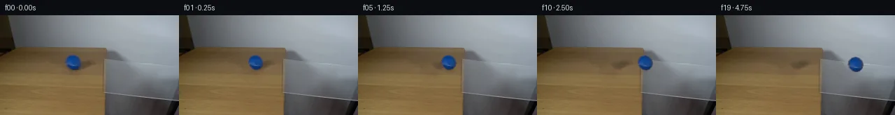
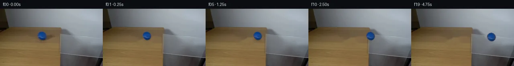
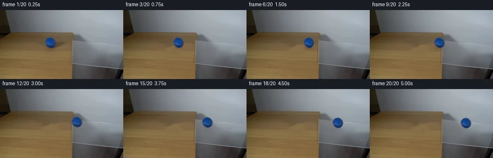
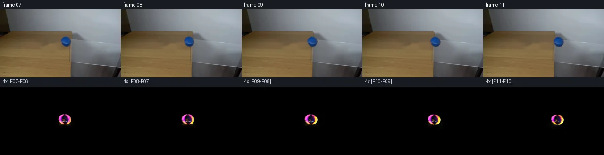

V0 · 初版
2026-11-04T21:11:50.785588+00:00 · RGB 5496fe33e714
![]()
Observable Generation Trace
把最终像素视频、Harness 冻结的每轮候选、真实工具事件和 Agent 自述放在同一页。可观测证据与模型自述分开标记，避免把“模型说它检查过”误当成真实工具调用。
![首帧]()
Static locked-off single-shot with fixed frame throughout filmed with constant framerate in real-time. The scene shows a realistic scientific demonstration. The scene only contains the described setup and actions. A piece of clear glass resting on the edge of a light-colored wooden table against a plain white wall. The blue tennis ball rolls from the wooden table over the glass.
首帧显示在左侧播放器初始画面。Track 权限、隔离和 tensor 一致性来自 run manifest，而不是 METHOD.md。
默认勾选初版和最终版；可选其他版本一起同步播放。仅检查图更新的连续重复快照已合并，回退旧视频仍保留为一次修订。
Observable events
来源：events.jsonl + run manifest
视觉工具可用，但 events.jsonl 没有记录到成功的输出 PNG 读取；存在 self-refine 候选，不等于存在可验证的视觉 self-refine。
Frozen candidates
每张图来自该 round 的真实 00 / 01 / 05 / 10 / 19 帧

pixels 3d37adb5b205f33e · code b396b11f3ed6ad99
--- previous/generate.py +++ current/generate.py @@ -0,0 +1,184 @@ +#!/usr/bin/env python3 +"""Generate the 20-frame PixelWorld continuation using local pixel operations only.""" + +from pathlib import Path + +import cv2 +import numpy as np +from PIL import Image, ImageDraw + +from artifact_io import save + + +ROOT = Path(__file__).resolve().parent +W, H = 256, 144 +SOURCE_CENTER = np.array([104.0, 68.0], dtype=np.float32) + + +def reconstruct_background(source: np.ndarray) -> np.ndarray: + """Remove the source ball/shadow with a tightly limited photographic inpaint.""" + mask = np.zeros((H, W), np.uint8) + # The photographed ball is x=94..115, y=57..78. Cover its antialiasing and + # its shallow contact shadow while leaving the remainder of the scene exact. + cv2.ellipse(mask, (104, 68), (13, 13), 0, 0, 360, 255, -1, cv2.LINE_AA) + cv2.ellipse(mask, (104, 78), (16, 4), 0, 0, 360, 255, -1, cv2.LINE_AA) + mask = cv2.threshold(mask, 8, 255, cv2.THRESH_BINARY)[1] + bgr = cv2.cvtColor(source, cv2.COLOR_RGB2BGR) + clean = cv2.inpaint(bgr, mask, 4.0, cv2.INPAINT_TELEA) + return cv2.cvtColor(clean, cv2.COLOR_BGR2RGB) + + +def extract_ball(source: np.ndarray): + """Build a soft RGBA sprite from the real ball in frame zero.""" + x0, y0, x1, y1 = 88, 52, 122, 86 + patch = source[y0:y1, x0:x1].copy() + yy, xx = np.mgrid[y0:y1, x0:x1] + radial = np.sqrt((xx - SOURCE_CENTER[0]) ** 2 + (yy - SOURCE_CENTER[1]) ** 2) + r, g, b = [patch[..., i].astype(np.float32) for i in range(3)] + blue_evidence = np.maximum(b - r * 1.08, b - g * 1.02) + core = (radial <= 11.25) & (blue_evidence > 10) & (b > 65) + core = cv2.morphologyEx(core.astype(np.uint8), cv2.MORPH_CLOSE, + np.ones((3, 3), np.uint8)) + alpha = cv2.GaussianBlur(core.astype(np.float32), (0, 0), 0.72) + alpha *= np.clip((12.0 - radial) / 1.0, 0.0, 1.0) + alpha = np.clip(alpha, 0.0, 1.0) + return patch, alpha, (x0, y0) + + +def alpha_ellipse(frame: np.ndarray, center, radii, color, opacity, blur=1.5): + """Composite a blurred ellipse into an RGB uint8 frame.""" + layer = np.zeros((H, W), np.float32) + cx, cy = int(round(center[0])), int(round(center[1])) + cv2.ellipse(layer, (cx, cy), radii, 0, 0, 360, float(opacity), -1, cv2.LINE_AA) + if blur: + layer = cv2.GaussianBlur(layer, (0, 0), blur) + a = layer[..., None] + out = frame.astype(np.float32) * (1.0 - a) + np.asarray(color, np.float32) * a + frame[:] = np.clip(out, 0, 255).astype(np.uint8) + + +def add_support_cue(frame: np.ndarray, center, glass_fraction: float): + """Render wood contact shadow, fading into a faint glass reflection.""" + contact = (center[0], center[1] + 10.4) + wood = 1.0 - glass_fraction + if wood > 0: + alpha_ellipse(frame, contact, (11, 3), (54, 48, 42), 0.15 * wood, 1.5) + alpha_ellipse(frame, contact, (5, 1), (42, 39, 38), 0.13 * wood, 0.7) + if glass_fraction > 0: + # A transparent support produces a small, cool reflection rather than a + # broad opaque shadow. Keep it weak so the original pane remains clear. + alpha_ellipse(frame, (center[0] + 1.0, center[1] + 11.0), (8, 2), + (53, 80, 116), 0.065 * glass_fraction, 1.2) + alpha_ellipse(frame, (center[0] + 1.0, center[1] + 12.0), (5, 1), + (129, 151, 174), 0.045 * glass_fraction, 0.8) + + +def add_rotating_surface(sprite: np.ndarray, alpha: np.ndarray, angle: float) -> np.ndarray: + """Add subtle material texture and a rotating curved tennis-ball seam.""" + h, w = alpha.shape + y, x = np.mgrid[:h, :w].astype(np.float32) + dx, dy = x - 16.0, y - 16.0 + ca, sa = np.cos(angle), np.sin(angle) + # Rotate material coordinates opposite the screen-space rolling direction. + u = ca * dx + sa * dy + v = -sa * dx + ca * dy + sphere = np.sqrt(np.clip(1.0 - (u * u + v * v) / (11.0 ** 2), 0.0, 1.0)) + # A gently curved marking, restricted to the visible sphere. + seam_dist = np.abs(v - (0.045 * u * u - 2.2)) … diff truncated; 97 more lines …
pixels 5ef616b03f4ec3e7 · code 23377b85589e4ec6
--- previous/generate.py
+++ current/generate.py
@@ -21,7 +21,9 @@
# The photographed ball is x=94..115, y=57..78. Cover its antialiasing and
# its shallow contact shadow while leaving the remainder of the scene exact.
cv2.ellipse(mask, (104, 68), (13, 13), 0, 0, 360, 255, -1, cv2.LINE_AA)
- cv2.ellipse(mask, (104, 78), (16, 4), 0, 0, 360, 255, -1, cv2.LINE_AA)
+ # The cast/contact shadow is wider than the colored silhouette and is most
+ # visible after the ball departs, so include its full soft footprint.
+ cv2.ellipse(mask, (104, 78), (22, 8), 0, 0, 360, 255, -1, cv2.LINE_AA)
mask = cv2.threshold(mask, 8, 255, cv2.THRESH_BINARY)[1]
bgr = cv2.cvtColor(source, cv2.COLOR_RGB2BGR)
clean = cv2.inpaint(bgr, mask, 4.0, cv2.INPAINT_TELEA)pixels 5ef616b03f4ec3e7 · code 23377b85589e4ec6
No generate.py text change in this frozen round.

pixels 9a7691beeb65117d · code 916211a8aab0681c
--- previous/generate.py
+++ current/generate.py
@@ -24,6 +24,9 @@
# The cast/contact shadow is wider than the colored silhouette and is most
# visible after the ball departs, so include its full soft footprint.
cv2.ellipse(mask, (104, 78), (22, 8), 0, 0, 360, 255, -1, cv2.LINE_AA)
+ # Diffuse upper-left lighting also casts a longer, oblique shadow to the
+ # camera-right (approximately x=108..143, y=61..78).
+ cv2.ellipse(mask, (120, 69), (24, 10), 0, 0, 360, 255, -1, cv2.LINE_AA)
mask = cv2.threshold(mask, 8, 255, cv2.THRESH_BINARY)[1]
bgr = cv2.cvtColor(source, cv2.COLOR_RGB2BGR)
clean = cv2.inpaint(bgr, mask, 4.0, cv2.INPAINT_TELEA)pixels 9a7691beeb65117d · code 916211a8aab0681c
No generate.py text change in this frozen round.
Final visual checks
Harness 保存的最终产物


Agent claims
以下文字由生成 Agent 撰写，不等同于工具证据
x=0..150, beginning at y=47 near the left and y=48 at the right edge. Its front/right edge is nearly vertical at x=149..151. The visible wood grain must remain unchanged.(151,64) to (255,69) and a lower diagonal highlight from about (149,111) to (255,123). Because it is transparent, the photographed wall and dark lower-right background remain visible through it.(104,68), visual radius about 11 px; contact/bottom is near y=78. It has a dark navy underside/right rim, saturated royal-blue body, a soft pale-blue highlight on its upper-left, and a subtle contact shadow on the wood. The apparent seam/highlight rotates with the ball.The ball rolls to camera-right at a steady real-time speed. It traverses the remaining tabletop, crosses the wooden edge around frame 08, then continues on the glass. The glass support line rises only slightly in image coordinates toward the table and falls gently toward camera-right, so the ball center descends by roughly 4 pixels while crossing it. Rolling rotation is coupled to translation (angle = distance / radius) and the small shadow/reflection changes from opaque wood to transparent glass at the crossing. The camera and every non-ball pixel remain locked.
| Frame | Ball center (approx.) | Event |
|---|---|---|
| 00 | (104, 68.0) | Exact source frame; ball at rest-image starting pose. |
| 01 | (109, 68.0) | Rolling right on wood; tiny displacement establishes motion. |
| 02 | (114, 68.0) | Rolling on wood, seam rotates. |
| 03 | (119, 68.0) | Rolling on wood. |
| 04 | (124, 68.0) | Rolling on wood. |
| 05 | (129, 68.0) | Rolling on wood. |
| 06 | (134, 68.0) | Approaches table edge. |
| 07 | (139, 68.0) | Ball overlaps the edge; most support still wood. |
| 08 | (144, 68.0) | Crossing transition; ball straddles wood and glass. |
| 09 | (149, 68.1) | Center reaches the edge; support/shadow begins changing. |
| 10 | (154, 68.3) | Ball is primarily on glass. |
| 11 | (159, 68.6) | Fully on glass; faint glass contact reflection. |
| 12 | (164, 68.9) | Rolls right/down along glass. |
| 13 | (169, 69.2) | Continues on glass. |
| 14 | (174, 69.5) | Continues on glass. |
| 15 | (179, 69.8) | Continues on glass. |
| 16 | (184, 70.1) | Continues on glass. |
| 17 | (189, 70.4) | Continues on glass. |
| 18 | (194, 70.7) | Continues on glass. |
| 19 | (199, 71.0) | Final pose, visibly established on the clear pane. |
Frame-to-frame movement is about 5 pixels (20 px/s). At an approximately 10-pixel rolling radius this produces about 0.5 radians of spin per frame, enough for readable rotation without violating the constant-rate filmed motion.
I generated the continuation entirely with local Python pixel operations (numpy, Pillow, and OpenCV); no external images, models, engines, masks, or network resources were used.
first_frame.png as the locked photographic source. Frame 00 is copied byte-for-byte at the RGB pixel level.y=68 while supported by wood, then descends three pixels over the remaining frames to follow the glass plane's perspective.angle = -distance / 10.5 px. The real ball's photographed shading remains the basis of the sprite, while a very subtle curved seam and microtexture rotate in material coordinates.(144, 256, 20) uint32 0xRRGGBB tensor through artifact_io.save, produced the inspection/player artifacts, and generated transition_check.png with frames 07–11 and amplified consecutive-frame differences.frames/00.png exactly equals first_frame.png.